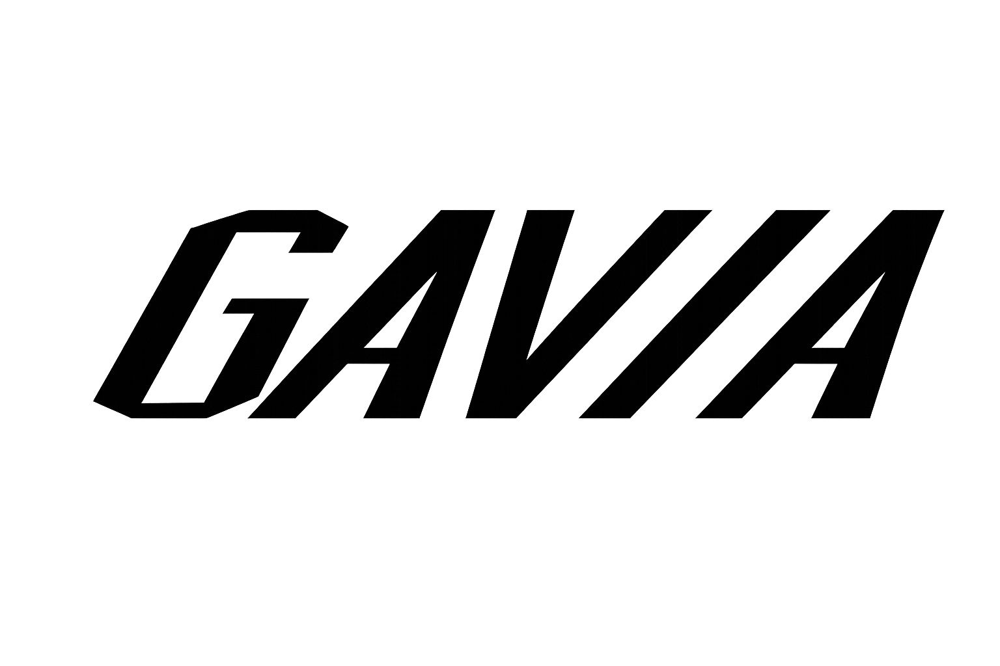

Confían en mí
Mis Auspiciadores


Triatleta Semi-Pro · Entrenadora · Preparadora Física
Ex Seleccionada Nacional de Baloncesto y Ciclismo en Ruta. Profesora de Educación Física dedicada a impulsar el rendimiento deportivo.
Desde los 11 años, he estado involucrada en el mundo del deporte. Comencé mi camino en el baloncesto, y a los 14 años logré llegar al alto rendimiento, siendo seleccionada nacional.
Durante mi trayectoria en el baloncesto, tuve el honor de representar a mi país en varios torneos internacionales, como los Sudamericanos, los Juegos Sudamericanos, la Copa América y el Mundial, experiencias que me han marcado profundamente.
Más adelante, descubrí el ciclismo de ruta y me enamoré de esta disciplina. Participé en varias Vueltas Nacionales y conseguí la medalla de plata en la prueba de contrarreloj en el Campeonato Nacional, lo que me permitió formar parte de la selección nacional para el Panamericano específico de ruta.
Hoy en día, estoy lista para un nuevo desafío. Mi objetivo es cambiar de rumbo e involucrarme en el triatlón, una disciplina que me motiva y me entusiasma para seguir creciendo como atleta.
Semi-Pro - Categoría 30-34 años
Cavancha, Iquique
🥇 ORO - Categoría 30-34 años
Clasificación General
Distancia Olímpica, Iquique
🥇 ORO - Categoría 30-34 años
Clasificación General (Plata)
Valdivia, Chile
🥇 ORO - Categoría 30-34 años
Clasificación General
Ex Seleccionada Nacional
Ex Seleccionada Nacional
Servicios profesionales para mejorar tu rendimiento deportivo
Entrenamiento personalizado enfocado en mejorar tu condición física, fuerza, resistencia y flexibilidad para alcanzar tus objetivos deportivos.
Ajuste biomecánico profesional de tu bicicleta para optimizar rendimiento, comodidad y prevenir lesiones. Ideal para ciclistas y triatletas.
Coaching integral para triatletas de todos los niveles. Planificación de las tres disciplinas con enfoque en tu desarrollo progresivo.

¿Listo para llevar tu rendimiento al siguiente nivel? Contáctame y comencemos a trabajar juntos en tus objetivos deportivos.